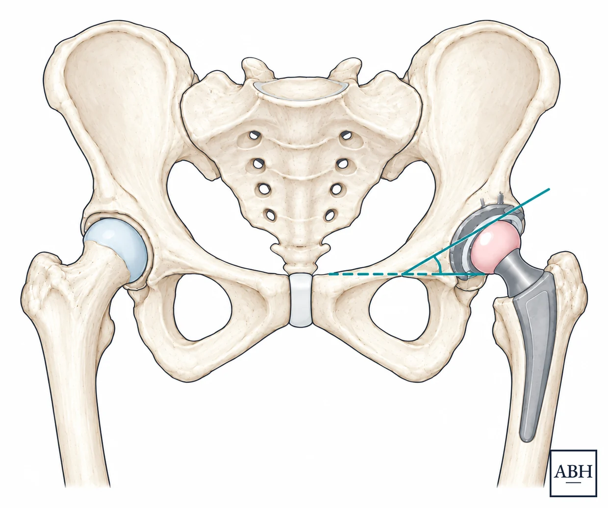
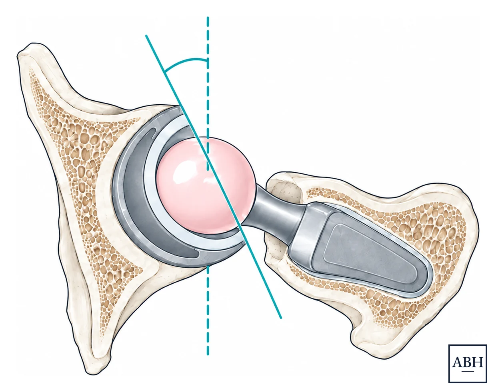
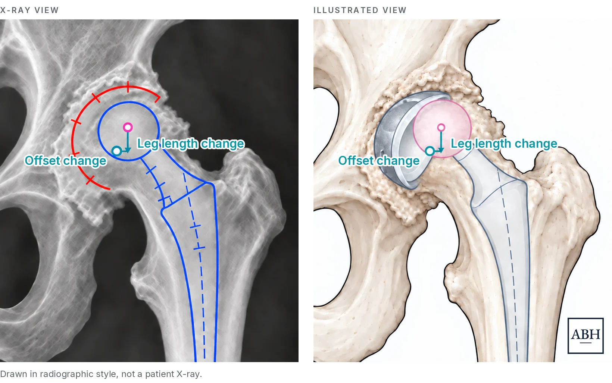

An explanation of robotic-assisted hip replacement for patients and other healthcare providers
General information for patients and clinicians, not a substitute for advice from your own surgeon.
A hip replacement removes the worn surfaces of the ball and socket components of the hip and replaces them with a metal stem and a smooth bearing. It is one of the more reliable operations in orthopaedic surgery, and modern hip replacements can last for 30+ years.5,6
Robotic assistance and computer navigation do not change the core components of the surgery, although these tools help make the placement of the implants more precise. Generally, the surgeon plans a robotic hip replacement in advance from the patient’s own imaging, and the system helps place the implants to that plan in the operating room.
Dr. Harris uses the Mako system for robotic-assisted hip replacement, with both the direct anterior approach and the STAR approach.
Mako is a trademark of Stryker. Naming it does not imply endorsement by, or affiliation with, Stryker. Payments from device makers to physicians, including meals, are reported publicly through CMS Open Payments.
For arthritis, a hip replacement is usually an elective operation, and the timing is largely your choice. Some problems, such as certain fractures, collapse of the bone, or infection, are treated sooner; your surgeon will tell you if one applies. The right time is when the joint limits the patient’s life, non-surgical care is no longer enough, and the patient decides they are ready.
Osteoarthritis is the most common reason that patients ultimately undergo hip replacement surgery, but not the only one. A hip may also be replaced because of avascular necrosis, meaning loss of blood supply to the ball of the hip, inflammatory arthritis such as rheumatoid or psoriatic disease, hip dysplasia, or damage that shows up years after an injury or fracture.
Before surgery is seriously discussed, most patients work through non-surgical treatment first.
The surgical plan is built before the operation from the patient’s own imaging. In the operating room the robotic system tracks the position of the pelvis, the leg, and the instruments in real time, so the implants can be placed to that plan rather than by eye and by feel alone.
The surgeon still performs the operation including the surgical exposure, cutting the bone, and controlling the robotic arm as it places the new hip socket. The robotic arm does not operate on its own and does not make decisions. It holds the plan, and the surgeon can change that plan at any point during the case based on findings in the surgery.
The socket component, called the acetabular cup, sits in the pelvis. Two angles describe how it sits. Inclination is how the cup is tilted. Anteversion is how far it is turned forward. Both affect how the ball and socket meet through a full range of movement.

Inclination, seen on a front view of the pelvis. The angle sits between the face of the cup and a horizontal line across the pelvis.

Anteversion, seen from above. The angle describes how far the cup is turned forward.
Cup position has traditionally been judged by eye and/or using manual guides that can show angles relative to the patient or the floor; however, the pelvis is known to move during surgery, and the patient’s position on the table is not necessarily a reliable reference. This is the part of a hip replacement where navigation and/or a robotic platform makes the most measurable difference.
In posterior-approach hip replacement, robotic assistance has been associated with a lower risk of revision for dislocation than manual technique.2 It is important to note, however, that the risk of dislocation depends on a number of things besides how the socket is placed and with modern techniques this risk is generally low. In a series of patients who had spinal stiffness or deformity, the group at highest risk of dislocation, 1.6 percent dislocated within two years, and a history of lumbar fusion was a stronger risk factor than which approach was used.4
Leg length is a common concern that patients raise most before a hip replacement. Offset is a related measurement describing how far the hip sits out from the pelvis, which affects the tension in the muscles around the joint and how the hip feels when walking.
Both of these factors are planned from imaging before the operation and checked against that plan during the surgery. The goal is to restore both leg length and offset of the hip before it wore out, using the other side as a reference where that side is normal.
In a study of patients having hip replacement for osteonecrosis, leg length after robot-assisted surgery through the posterior approach differed between the legs by about 4 mm, against about 5 mm when the same approach was done manually. Compared with the direct anterior approach done manually, there was no meaningful difference.3

The same plan shown two ways, on an X-ray view and as an illustration. In both, the vertical arrow is the leg length change and the horizontal arrow is the offset change. The left panel is drawn in radiographic style and is not a patient X-ray.
Small differences in leg length are common after any hip replacement and most patients do not notice them. Larger differences are what the planning is meant to avoid.
The size of the stem and the cup, and how they sit in the bone, are planned from the patient’s imaging. Planning the size in advance gives a clearer picture of how the implant will fit the shape of that particular pelvis and femur.
Robotic assistance is not tied to one approach. Dr. Harris uses it with both the direct anterior approach and the STAR approach, and chooses the approach based on the patient’s anatomy, imaging, and history.
Recovery after a robotic-assisted hip replacement is the same as recovery after a hip replacement done without a robot. Most patients are up and walking with assistance the day of surgery. For many healthy patients, hip replacement can be done as a same-day, outpatient procedure with recovery continued at home, including with the anterior and STAR approaches.
The hip replacement recovery guide covers this timeline in detail.
Patients can do very well with a hip replacement done with robotic assistance and with one done without it.
What the evidence shows consistently is more accurate implant position. A systematic review and meta-analysis comparing robotic-assisted and conventional manual hip replacement found greater implant placement accuracy and lower complication rates with robotic assistance, without superior clinical results.1
It is a hip replacement planned in advance from the patient’s own imaging and carried out with a robotic arm and computer navigation helping place the implants to that plan. The operation itself is the same operation, and the implants are the same ones used in a conventional hip replacement.
No. The surgeon performs the operation throughout. The system holds the plan and helps carry it out, and the surgeon can change that plan at any point during the case based on what the hip actually looks like.
The Mako system.
Implant position is generally more accurate with robotic assistance, and a systematic review and meta-analysis also found lower complication rates. Clinical results have not been shown to be better. Patients can do very well with both.
In posterior-approach hip replacement, robotic assistance has been associated with a lower risk of revision for dislocation than manual technique. That is one finding rather than a guarantee, and the risk of dislocation depends on a number of things besides how the socket is placed.
Leg length is planned before the operation and checked against that plan during it. Small differences are common after any hip replacement and most patients do not notice them. Larger differences are what the planning is meant to avoid.
Yes. Dr. Harris uses robotic assistance with both the direct anterior approach and the STAR approach, and chooses the approach based on the patient’s anatomy, imaging, and history rather than on the technology.
Whether robotic assistance changes anything for a particular hip depends on the anatomy and on what the imaging shows. Dr. Harris reviews each case individually and explains the options and the reasoning behind them. Send a message.